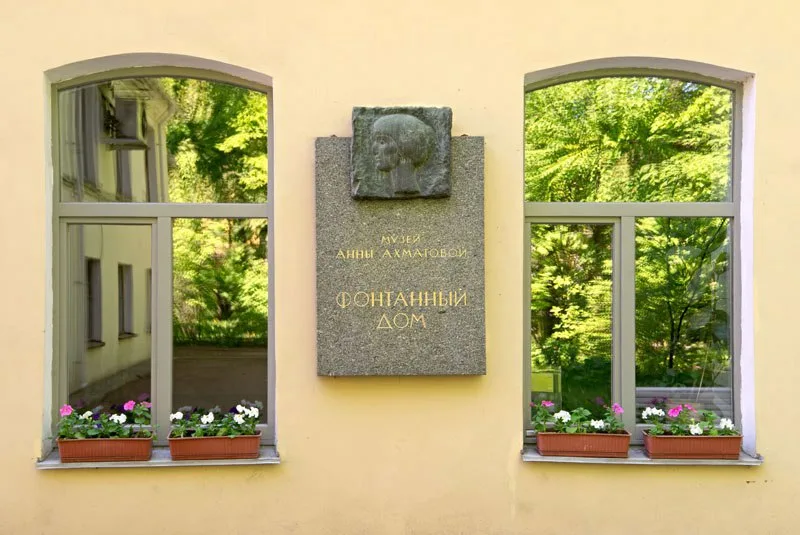
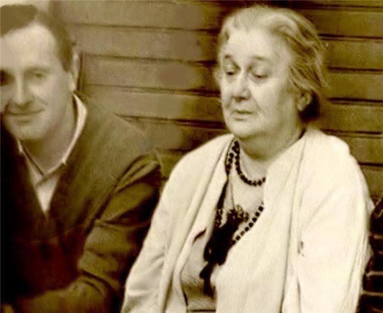
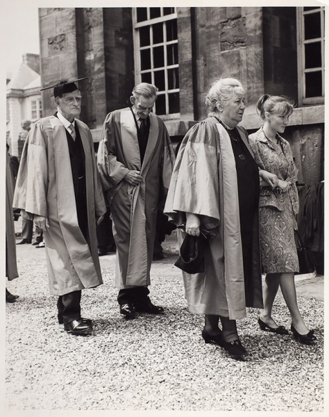

Наследие и влияние на прозу
Музей Анны Ахматовой расположен в Фонтанном доме (наб. реки Фонтанки, 34) в Санкт-Петербурге. Это здание — бывший особняк графов Шереметевых. Ахматова жила здесь с 1924 по 1952 год в квартире, которая находилась в южном дворе Фонтанного дома. В этом же доме жил её третий муж, искусствовед Николай Пунин, и именно здесь она создала «Реквием» и «Поэму без героя». Музей был открыт в 1989 году, к столетию со дня рождения поэтессы. Экспозиция включает мемориальную комнату, восстановленную по воспоминаниям современников, личные вещи Ахматовой (письменный стол, книги, фотографии), рукописи и прижизненные издания её книг, а также комнату Иосифа Бродского — ученика Ахматовой, нобелевского лауреата, который считал её своим главным учителем. Музей регулярно проводит выставки, конференции, литературные вечера.
Лидия Яковлевна Гинзбург (1902–1990) — литературовед, мемуарист, прозаик. Её книга «Записки блокадного человека» впервые была полностью опубликована в 1984 году. Это документальное повествование о блокаде Ленинграда, основанное на дневниковых записях, которые Гинзбург вела с 1941 по 1944 год. Гинзбург была близкой подругой Ахматовой. Их знакомство состоялось в конце 1920-х годов и продолжалось до смерти Ахматовой. Гинзбург оставила подробные мемуарные записи об Ахматовой, которые опубликованы посмертно. Эти записи фиксируют устные рассказы поэтессы, её реплики, наблюдения, отношения с современниками. Для историков литературы они представляют собой уникальный источник, сопоставимый с дневниками самого поэта.
Иосиф Александрович Бродский (1940–1996) познакомился с Ахматовой в начале 1960-х годов. Он был на 52 года моложе, но она сразу разглядела в нём поэта и поддержала его. Их общение продолжалось до её смерти в 1966 году. После смерти Ахматовой Бродский написал стихотворение «На смерть Анны Ахматовой» (1966) и ряд эссе, в которых анализировал её творчество. Его эссеистический сборник «Меньше единицы» (1986) получил Национальную книжную премию США. Влияние Ахматовой на прозаический стиль Бродского проявляется в лаконизме, точности деталей и отказе от излишней метафоричности.
Одна из самых интересных тем в исследовании творчества Ахматовой — её диалог с Фёдором Достоевским. В «Поэме без героя» (1940–1965) Ахматова многократно цитирует Достоевского и спорит с ним. В статье «Интертекстуальные связи "Поэмы без героя" А.А. Ахматовой с романами Ф.М. Достоевского» (журнал «Новый филологический вестник») подробно анализируются следующие параллели: образ Петербурга как города-призрака (у Достоевского — «Петербургские сновидения», у Ахматовой — маскарад 1913 года); мотивы преступления и наказания, вины и искупления; спор с «бесами» Достоевского — идеологией, ведущей к разрушению. Таким образом, Ахматова продолжает традицию русской философской прозы, начатую Достоевским.


